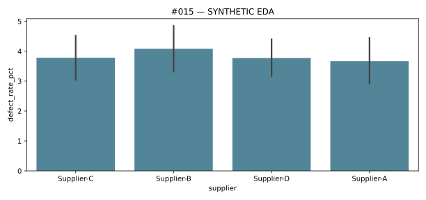

Problema
Medir qualidade de fornecedores e lotes de componentes.
Metodologia
Taxa ponderada de defeitos por unidade inspecionada e Pareto por fornecedor.
Resultados reproduzíveis do dataset
- batches
- 180
- defects
- 1172
- inspected
- 30.882
- weighted defect rate pct
- 3,79
Gráfico gerado por Seaborn / Matplotlib

Abrir gráfico interativo Plotly ↗Métricas estruturadas (JSON) ↗Interpretação
Não substituir taxa ponderada por média de percentuais de lotes desiguais.
Decisão possível
Focar inspeções nos grupos prioritários após ajuste de mix e amostragem.